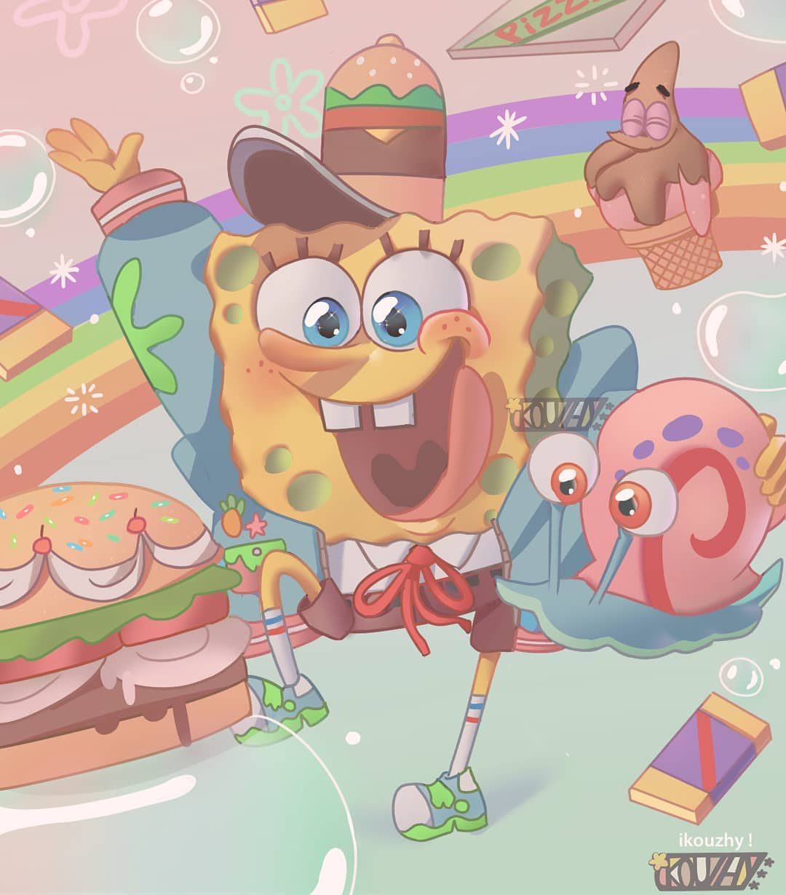

hola

Nombre completo: Bob Esponja Cuadrado Pantalón
Alias: El cocinero más hiperactivo de Fondo de Bikini
Edad: Legalmente indefinida, pero psicológicamente 12
Profesión: Chef frustrado, soplador de burbujas profesional
Mascota: Un caracol que ladra (no preguntes)
Pasatiempos: Molestar a Calamardo, fallar el examen de conducir, ser esponja
Vecino favorito: Nadie, pero cree que todos lo aman
Bienvenidos al blog NO oficial de Bob Esponja, la esponja que no solo vive en una piña debajo del mar, sino que también ha redefinido el concepto de "madurez emocional" (es decir, no tiene ninguna). Aquí exploramos sus aventuras llenas de frituras ilegales, medusas que dan descargas legales, y amigos tan raros como un dólar de tres cabezas. ¿Sabías que Bob ha reprobado más veces el examen de manejo que Plankton ha fracasado robando la fórmula secreta? Y hablando de la fórmula secreta... nadie sabe qué es, pero te aseguramos que probablemente involucra lágrimas de Calamardo. Este blog es tu fuente no confiable de datos parcialmente verdaderos sobre Fondo de Bikini. ¡No lo tomes en serio, como todo en la vida submarina!